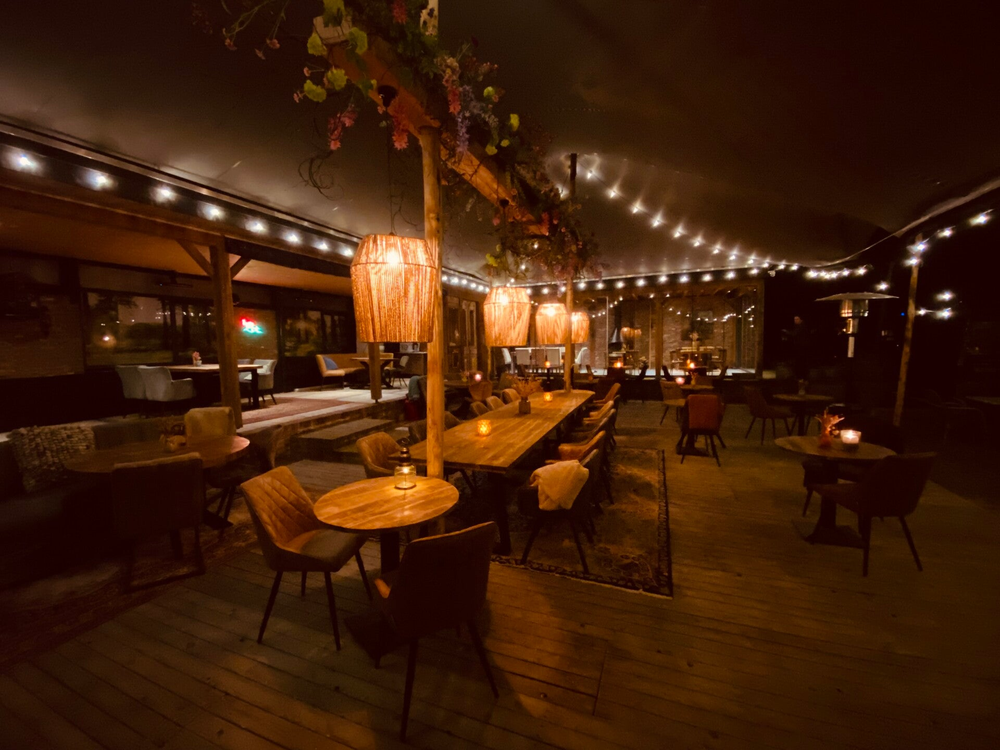
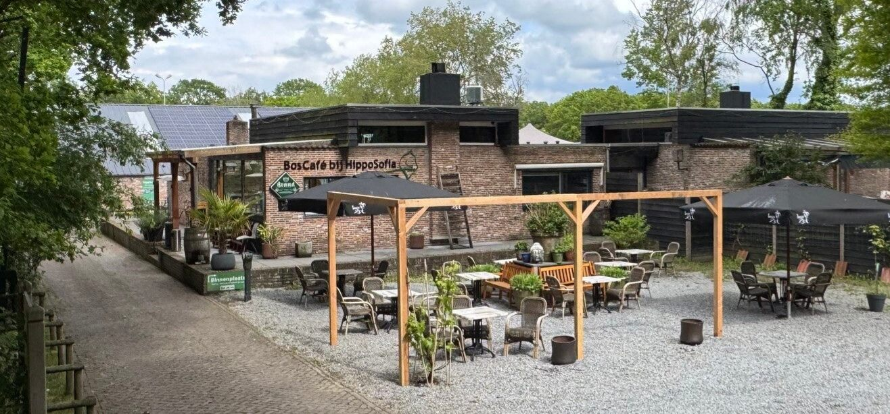
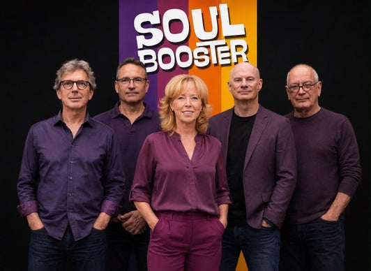
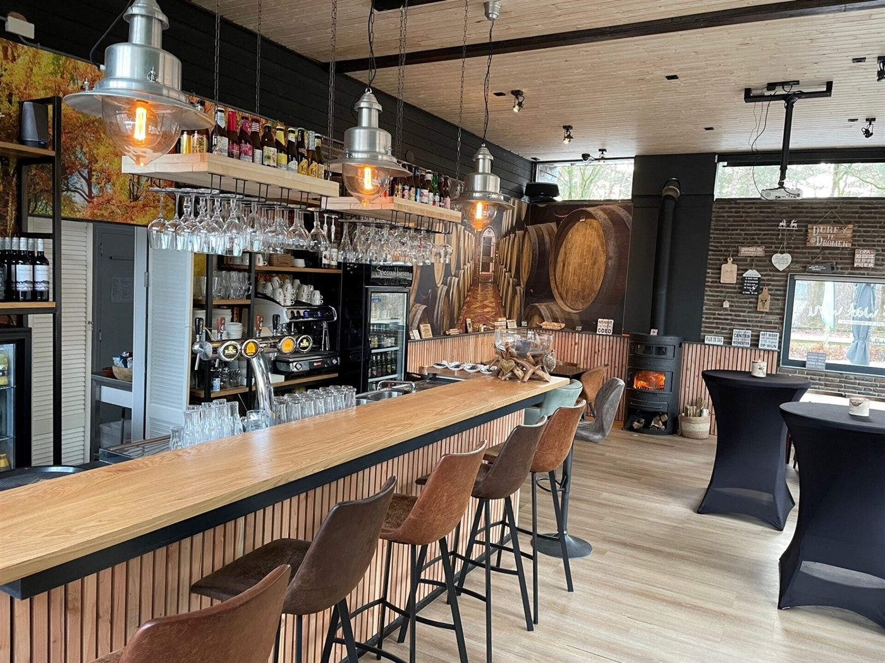
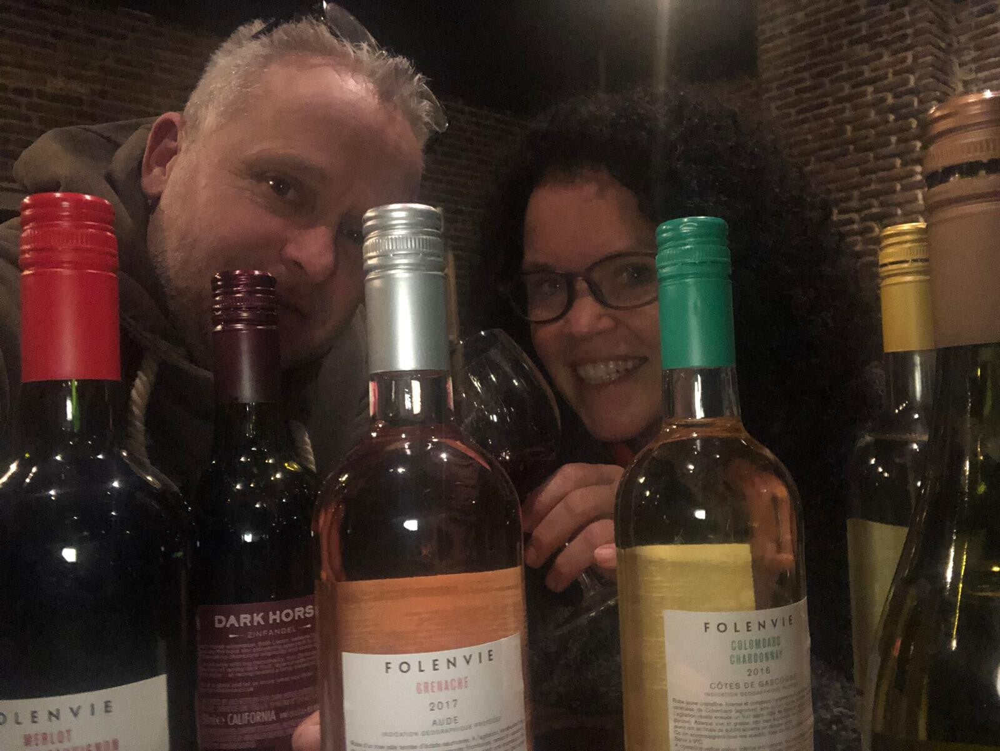
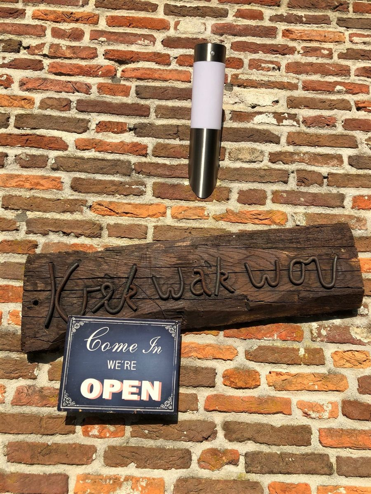

BosCafé bij HippoSofia, Hooge Mierde
Krek wak wou
Een gezellig hapje en drankje na de wandeling, fietstocht of motortocht. Aan de Poort van Utrecht, midden tussen de fiets- en wandelroutes.
Wij verwelkomen u graag
BosCafé "Krek wak wou" bij HippoSofia ligt aan de Poort van Utrecht, met diverse fiets- en wandelroutes. U kunt hier terecht voor een gezellig hapje en drankje, voor na de wandeling, fietstocht of motortocht.
Op onze binnenplaats, met het boscafé in het midden, is er overal wel een zon- of schaduwplekje te vinden. Geniet op het terras van het zonnetje en de natuur met al haar geluiden. Te veel zon, of nog wat fris? Neem dan plaats in onze stretchtent, met een huiselijke, warme sfeer, voor een drankje of een lekkere lunch.
Joep en Anja Thomassen

Kom zoals u bent: te voet, op de fiets, de motor of het paard
-
Fiets of motor
Uw fiets of motor stalt u in onze bikers stalling.
-
Ruiters
Uw paard kan staan bij de haken aan de muur of aan de boomstam.
-
Menners
Uw menwagen met paard staat op onze binnenplaats, waar u zicht blijft houden op uw span.
-
Terras en stretchtent
Zon, schaduw of de warme stretchtent: er is altijd een fijn plekje.
De kaart
Van een plankje kaas bij de borrel tot een uitsmijter na de wandeling. Prijzen in euro's.
Agenda
Live muziek op zondag en onbeperkt gamba's eten op vrijdag. Alles onder voorbehoud van weersomstandigheden of overmachtssituaties.
-
zo 29 nov
Live muziek: Soulbooster

Bekende popsongs in een 'funky soul-jazz' jasje. Deze band, met muzikanten uit Veldhoven, Uden en Hamont-Achel en een Reuselse zangeres, laat zich inspireren door de Amerikaanse band Scary Pockets en brengt bekende hits in een verrassende stijl opnieuw tot leven. Op de setlist staan nummers als Crazy little thing called love, Big yellow taxi, Sunny en Stuck in the middle with you, maar ook pareltjes als Man in the mirror, God only knows en Say a little prayer.
Jan Keeris (toetsen), René Waardenburg (gitaar), Ben van Kemenade (bas), Toep van Kemenade (drums), Marty Kanters (zang).
-
vr 4 dec
Onbeperkt gamba's eten
-
zo 13 dec
Live muziek: Ooijt
-
Volgt nog
Nieuwe data volgen. Op Facebook (boscafekrekwakwou) blijft u op de hoogte van onze activiteiten, foto's en meer.


Wie zijn wij?
Joep en Anja Thomassen zijn de eigenaren van dit BosCafé, voorheen bekend als "Café bij de manege", in het mooie dorp Hooge Mierde. Al jarenlang komen mensen hier om gezellig een drankje te drinken aan de bar of op het terras, en om een lekker hapje te eten.
Het boscafé ligt aan de natuurpoort van het Landgoed de Utrecht. In deze groene grensstreek met een rijke historie vormden de bossen eeuwenlang het terrein van smokkelaars. Het landschap van de Kempen vertelt verhalen, maar biedt ook een oase van rust. Ervaar de stilte van de Weeldse Heide of ontdek het statige Landgoed de Utrecht. Pak de wandelschoenen, ontdek het gebied per paard of op de fiets en maak kennis met het land van de 'contente mens'.
De charme van het boscafé is zoals het al jaren is geweest, en zo zal het blijven. Toch is er een frisse wind door het boscafé gegaan: vaste gasten van weleer en nieuwe gasten eten, drinken en vieren hier met veel plezier hun feestjes.
Openingstijden
| Maandag | 12.00 – 18.00 |
|---|---|
| Dinsdag | Gesloten |
| Woensdag | 12.00 – 18.00 |
| Donderdag | 12.00 – 18.00 |
| Vrijdag | 12.00 – 18.00 |
| Zaterdag | 10.30 – 18.00 |
| Zondag | 10.30 – 18.00 |
Of tot zolang er gasten zijn. Op regenachtige dagen kunnen de tijden afwijken: bel bij twijfel even naar 06 22 38 38 33. Staat het bord met OPEN er niet, dan zijn we gesloten.

Contact en route
BosCafé "Krek wak wou"Joep en Anja Thomassen
Weeldsedijk 2
5095 EC Hooge Mierde
Volg ons op Facebook: boscafekrekwakwou